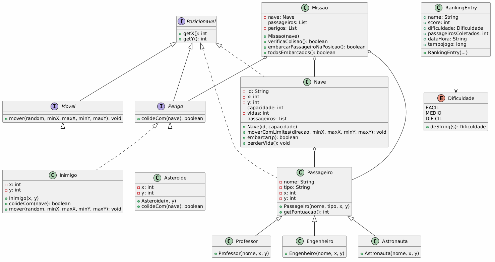
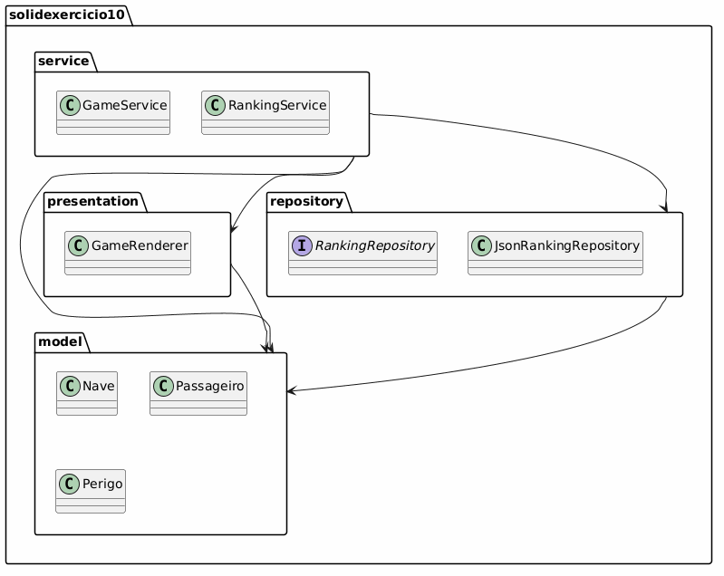

Refatoração de um jogo em Java aplicando princípios SOLID
Peguei um jogo em Java que tinha tudo misturado em poucas classes (monolítico) e refatorei usando os princípios SOLID. O código original funcionava bem, mas era meio bagunçado para manutenção. Agora está organizado em 3 camadas bem definidas: Model, Service e Repository.
Cada classe tem uma única responsabilidade:
Posso adicionar novos tipos sem quebrar o código existente.
Subclasses podem ser usadas no lugar da classe base sem problemas.
Interfaces pequenas e focadas: Posicionavel, Movel, Perigo
GameService depende de abstrações, não de implementações concretas via injeção de dependência.
Mostra todas as entidades do projeto e seus relacionamentos:

Mostra como o projeto está organizado em camadas:

| Teste | Resultado |
|---|---|
| Compilação original | ✓ OK |
| Compilação refatorada | ✓ OK |
| Iniciar nova missão | ✓ OK |
| Mover nave (WASD) | ✓ OK |
| Embarcar passageiros (E) | ✓ OK |
| Detectar colisões | ✓ OK |
| Finalizar missão (F) | ✓ OK |
| Ver ranking | ✓ OK |
| Salvar em JSON | ✓ OK |
Quando tentava compilar via VS Code terminal, dava erro:
error: class GameService is public, should be declared in a file named GameService.java cannot find symbol - class GameRenderer
O problema: Estrutura de pastas errada. Classes em subpastas mas o classpath não estava configurado.
A solução: Compilar direto com:
javac -d bin src/solidexercicio10/*.java src/solidexercicio10/service/*.java src/solidexercicio10/repository/*.java
Lição: Quando tem subpastas em Java, tem que referenciar cada uma no javac!
Compilava com sucesso mas na hora de rodar, dava erro de versão:
Exception in thread "main" java.lang.UnsupportedClassVersionError: com/example/Main has been compiled by a more recent version of the Java Runtime
O problema: Tinha arquivo .class de uma compilação anterior com Java versão diferente.
A solução: Deletar toda a pasta bin e recompilar do zero.
Lição: Sempre limpar os arquivos .class antigos!
Quando criava os arquivos .java pelo PowerShell com Out-File, aparecia esse erro na compilação:
error: illegal character: '\ufeff'
O problema: PowerShell com UTF8 adiciona um Byte Order Mark (BOM) invisível no início do arquivo. Java não gosta!
A solução: Usar -Encoding ASCII:
Out-File -Encoding ASCII -FilePath "arquivo.java"
Lição: Encoding é invisível mas quebra tudo. Always use ASCII for Java files!
Eu tinha criado a interface Posicionavel mas o VS Code falava "cannot resolve symbol".
O problema: VS Code não tinha reconhecido a pasta src como source folder.
A solução:
Lição: VS Code precisa da raiz do projeto, não subpastas!
Benefício: Deixa o código muito mais organizado. Quando preciso alterar como os dados são salvos, só mexo na camada Repository!
Benefício: Posso adicionar novos tipos sem mexer no GameService.
Benefício: Fica fácil trocar as implementações para testes ou produção.
Problema: Se o arquivo JSON ficar corrompido, perde todos os dados.
O que faria: Usar um banco de dados (SQLite, H2Database).
Problema: Se quisermos interface gráfica, fica complicado.
O que faria: Criar interface Renderer com diferentes implementações.